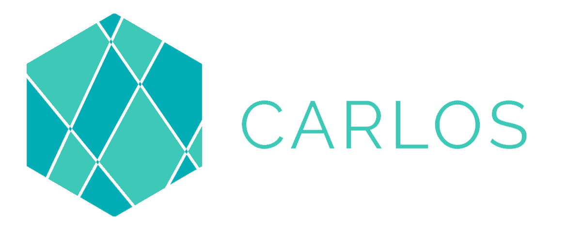
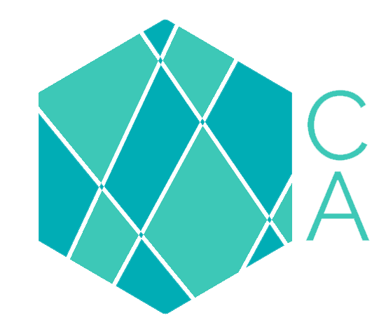
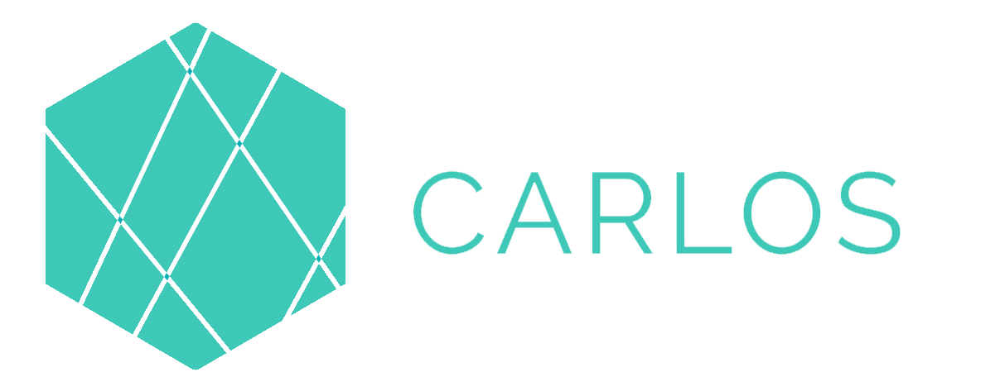
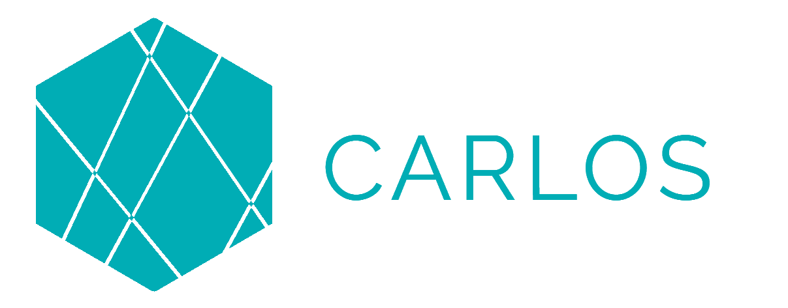
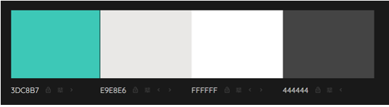
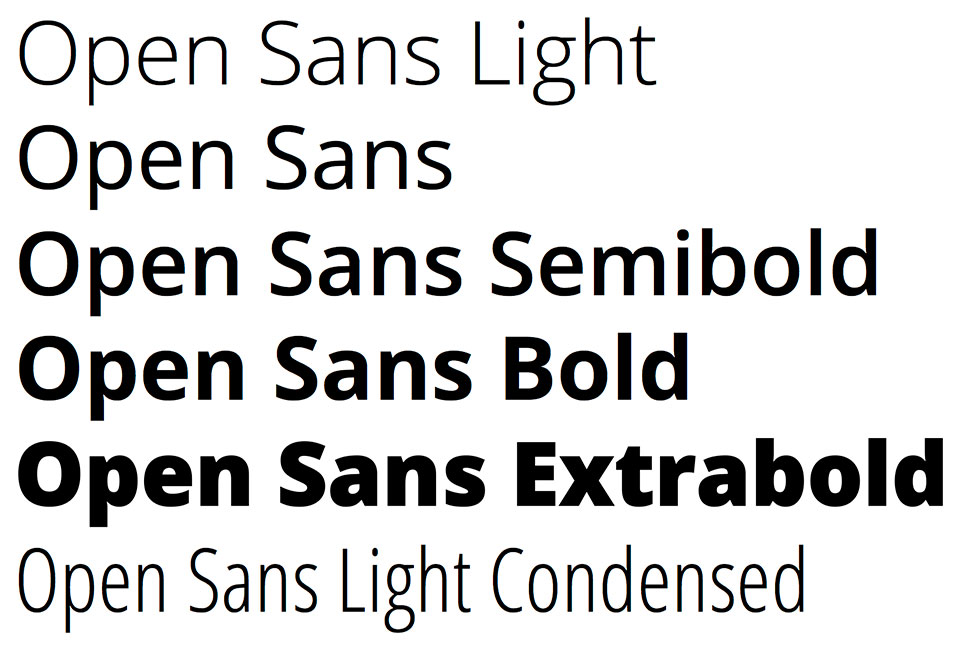
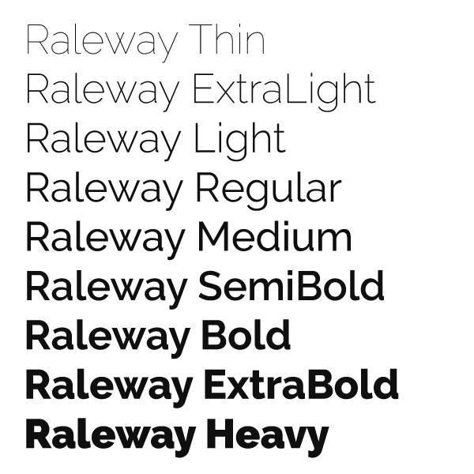

Pagina requisito DAW
Aqui podeis ver el progreso que se ha ido haciendo a lo largo de todo el curso de DWEC y DIW:
Ir ha evidenciasManual de identidad corporativa
LOGOS:
Logo primario:Fondo blanco / fondo oscuro:
Logo secundario:
Fondo blanco / fondo oscuro:
Colores logo:
Color Moderate cyan con referencia #3dc8b7 (más claro) solamente se utilizará para el color de las letras y rellenar partes del logo.
Color Strong cyan con referencia #00adb5 (más oscuro) solamente se utilizará para rellenar algunas partes del logo
Notas a destacar: nunca poner el logo encima de alguno de estos dos colores:
#00adb5, #3dc8b7
Formas incorrectas de usar el logo:
 
Paleta de colores:
He decicido coger estos colores por que nos transmiten calma, y un punto de seriedad, tambien para no hacer la pagina muy aburrida he cogido un color alegre como destacado:
Tipografia:
Textos en general: Open Sans
TTítulos, barra de navegación: Raleway
Video interactivo
Aqui podeis ver un video iteractivo que hemos echo en DIW el cual trata de que si le damos al boton del las flechas avanza o retrozede el video 10s, tambien tenemos el boton de pausa, como extra le he implementado que a la mitad del video arar una pausa, tambien podemos ver e porcentaje de el video con su cambio de colores menor a 25 azul, menor de 75 naranja y menor 100 rojo: